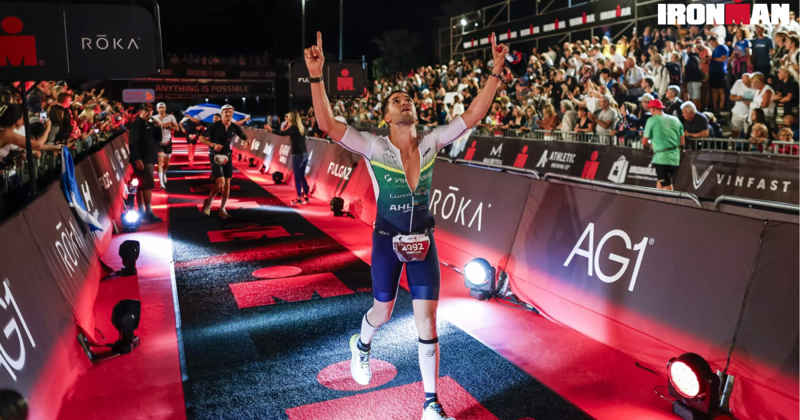

Ironman Run

You just finished a 112 mile bike ride, now all you have to do is run 26.2 miles. You have been racing for an estimated 7-10 hours already, your butt is sore, legs about to fall off, mentally exhausted the question that remains now is do you have it in you to go and run 26.2 miles and cross that finish line.
This is where your training pays off, all the sessions of missing family and friend events, birthdays, nights out on the town. You are one leg away from victory. Is this where you quit or carry yourself to that finish line. If you fuled correctly on the bike and didnt blow up your legs or stomach, then its just one foot in front of the other. Every 30 minutes you are intaking 25-40 grams of carbs to keep those legs moving.
If you have ever run a marathon then you are familiar with the infamous "Wall" Usually at mile 18-20 most people say they hit a wall and just fall flat. But this is the most crucial point in the race, you are 6 miles away from the finish line. You are doing everything to just keep those legs moving. At this point you probably cant intake solids or fluids. Your stomach is just destoryed. Water makes you vomit, gatorade makes you vomit. Gels make you vomit. But you dont quit, you persevere and learn something about your self that you have never known.
Finally the last mile, you can see the finish line ahead and you get closer to hearing those famous words. You are still doubting yourself that you will finish. But finally you make it to that red carpet. You use every last ounce of energy to keep moving. As you are about to cross that finish line, you have raced 12-18 hours and the annoucer finally calls your name and attached is the most famous words in endurace sports. "YOU ARE AN IRONMAN"